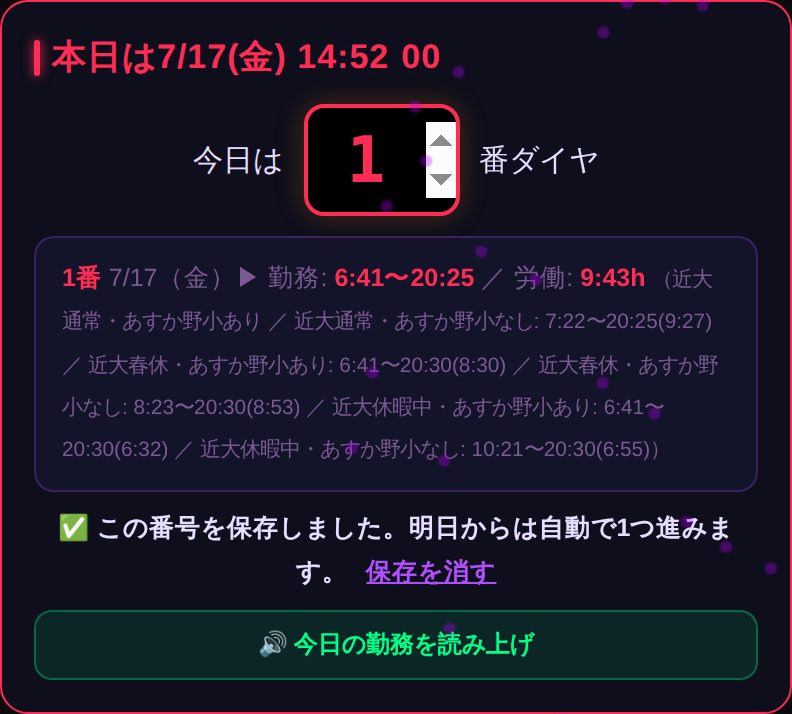
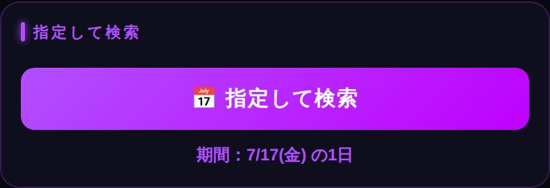
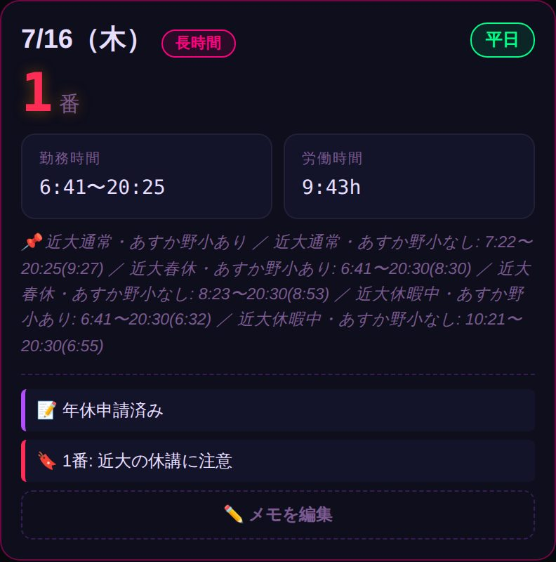
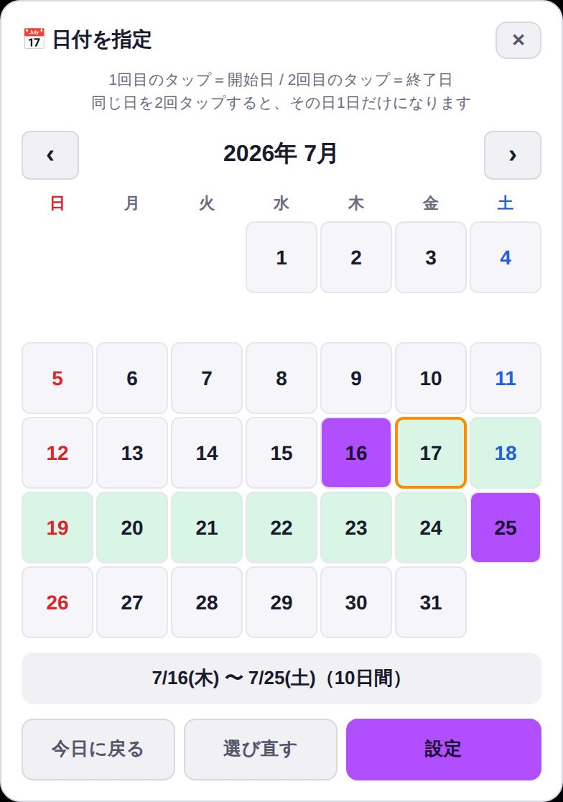
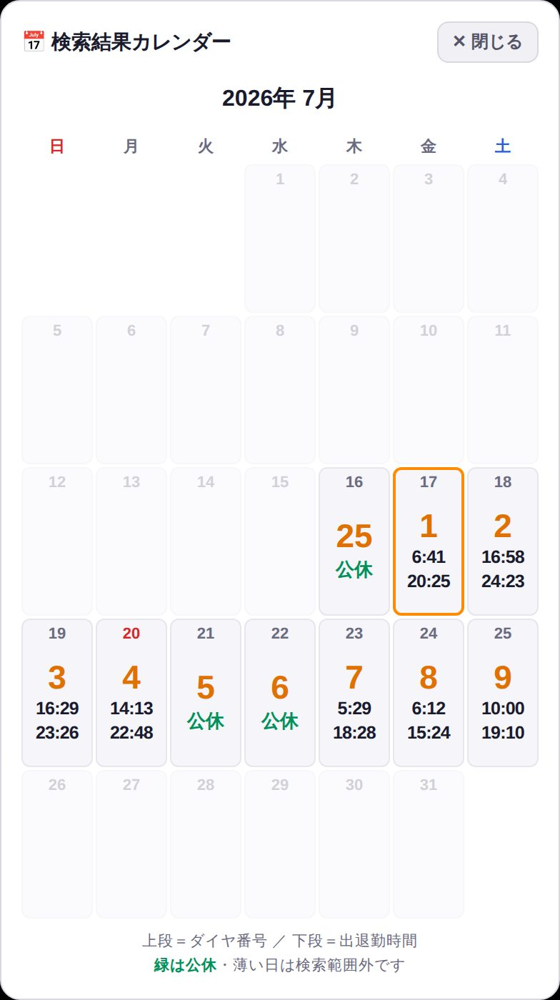
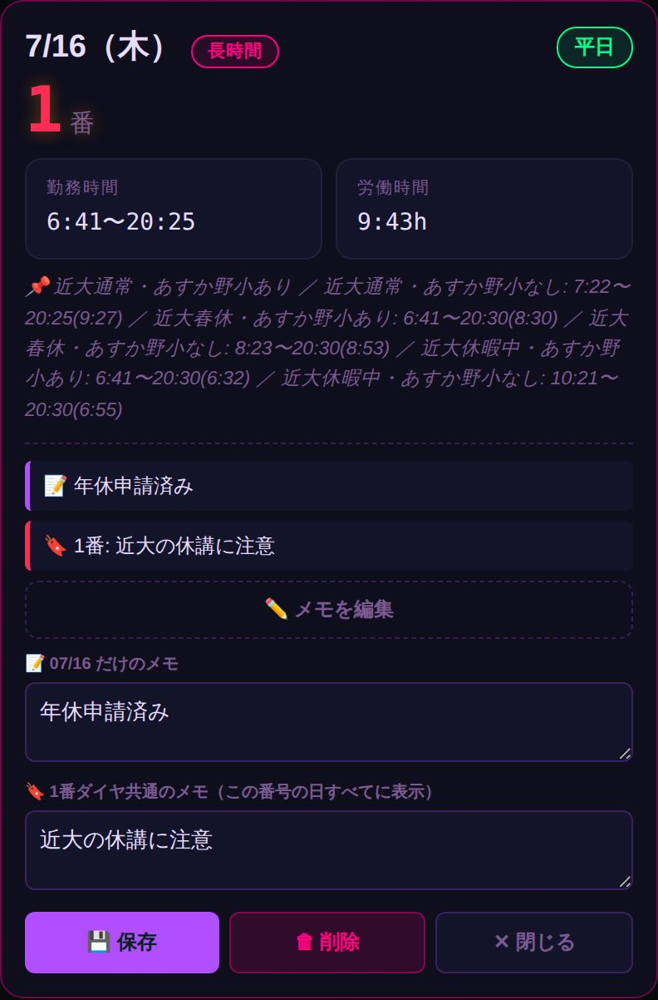
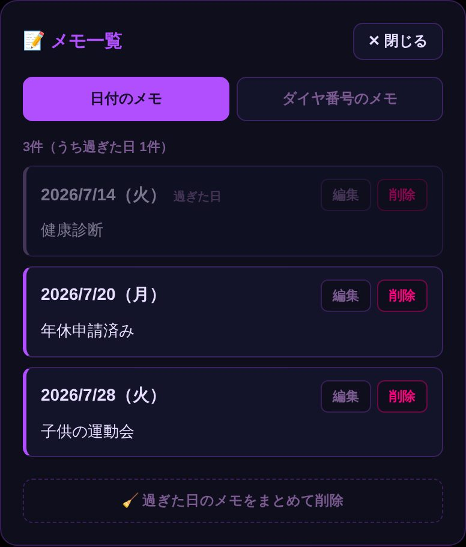

⚡ まずはこの3つだけ
- 自分のダイヤ番号を入れる
- すぐ下に今日の出退勤が出る
- 先の予定は「1週間」などを押す
これだけで使えます。番号は保存されるので、次の日からは開くだけでOKです。
④から下は「もっと便利に使いたい人」向けなので、読まなくても大丈夫です。
きほんの使い方
① ダイヤ番号を入れる
一番上の枠に、今日の自分のダイヤ番号(1〜92)を入れるだけ。すぐ下に今日の勤務が出ます。

次の日からは入れ直さなくてOK。開くだけで、自動で1つ進んだ番号が入っています。
番号がズレた時は「保存を消す」を押して入れ直してください。
※ 保存されるのはこの端末の中だけです。同僚の番号と混ざることはありません。
② 「明日」「1週間」「1ヶ月」を押す
押すだけで勤務が出ます。「明日」は明日1日だけ、「1週間」「1ヶ月」はその期間をまとめて表示します。次の日以降は、番号が1日ずつ進んだ状態で出ます。

③ 結果の見方
日ごとに ダイヤ番号・出退勤の時間・労働時間 が並びます。休みの日は「公休」と出ます。

もっと便利に（読まなくてもOK）
④ 日にちを指定して調べる
「📅 指定して検索」を押すとカレンダーが開きます。1回目のタップ＝開始日、2回目のタップ＝終了日。その間をまとめて調べられます。期間の長さに制限はありませんので、何ヶ月先でも指定できます。

同じ日を2回タップすれば、その日1日だけを調べられます。
‹ › で月を移動できるので、月をまたいだ期間もOKです。カレンダーを左右に指ではらっても月を移動できます。
「設定」を押すと結果が出て、画面が自動で下まで流れます。
⑤ カレンダーで見る・保存・スマホに登録
結果の一番下の「📅 カレンダーを見る」を押すと、1ヶ月分が一目で分かります。マスをタップすると大きく表示され、分割勤務の詳しい時間も読めます。土曜は青、日曜・祝日は赤で色分けされます。

この画面の「⭐ メモ一覧に保存」で検索結果を保存でき、あとで「📝 保存したメモの一覧」→「保存したカレンダー」からいつでも開けます。
さらに「📅 カレンダーアプリに一括保存」を押すと、勤務をスマホのカレンダーにまとめて登録できます（出勤1時間前のお知らせ付き。公休の日も番号入りで入ります）。
※ 押すとファイル（勤務カレンダー.ics）がダウンロードされるので、それを開いてカレンダーに追加してください。追加した後のファイルは削除して大丈夫です（ダウンロードフォルダに溜まっていくので、ときどき消してください）。
⑥ メモを残す
各日の「📝 メモを追加」から書けます。2種類あります。

日付のメモ…その日だけに出ます（例：年休申請済み）
ダイヤ番号のメモ…その番号の日すべてに出ます（例：さつき最終便に注意）
📷 メモには画像も貼れます。「📷 画像を追加」から、写真を何枚でも貼れます（ダイヤ表の写真、連絡票、駐車位置のメモなど）。貼った画像はメモ一覧やカレンダーからも見られ、タップすると大きく表示されます。画像は自動で小さくしてから保存されますが、貼りすぎると端末の容量を使うのでほどほどに。
⚠ メモと画像はこの端末の中だけに保存されます。同僚には見えません。機種変更やブラウザのデータ削除で消えるのでご注意ください。
⑦ 書いたメモをまとめて見る
下の「📝 保存したメモの一覧」を押すと、これまでのメモを全部まとめて見られます。その場で編集・削除もできます。

「日付のメモ」と「ダイヤ番号のメモ」がタブで分かれています。過ぎた日には印が付き、🧹 過ぎた日のメモをまとめて削除で一度に片付けられます。
⑧ 圏外でも使えます
一度オンラインで開いておけば、その後は圏外や機内モードでも起動できます。
「🔄 新しいバージョンがあります」と出たらタップしてください。最新バージョンのアプリに更新されます。
ホーム画面に入れておくと、アイコンを押すだけで一発で開けます。
毎回LINEをさかのぼって探す必要も、URLを打ち直す必要もありません。圏外でも開けます。
⚠ ここだけ先に読んでください
LINEから開いた画面のままでは、ホーム画面に追加できません。
まず iPhoneなら「Safari」／Androidなら「Chrome」で開き直して から、下の手順をやってください。
🍎 iPhone の人
1
LINEでこのアプリを開いたら、画面のすみにある ⋯ や ↗ のマークを押して、「Safariで開く」（または「他のアプリで開く」→ Safari）を選びます。
2
Safariで開いたら、画面の下の真ん中にある共有ボタン ⬆︎（四角から上矢印が出たマーク）を押します。
※ ボタンが出ていない時は、画面を少し下にスワイプすると出てきます。
3
出てきたメニューを下にスクロールして、「ホーム画面に追加」を押します。
ホーム画面に 「${APP_CONFIG.shortTitle}」 というアイコンができていればOK。次からはそれを押すだけです。
※「Safariで開く」が見つからない時は、リンクを長押ししてコピーし、Safariのアドレス欄に貼り付けて開いてもOKです。
🤖 Android の人
1
LINEでこのアプリを開いたら、画面のすみにある ⋮ のマークを押して、「他のアプリで開く」→ Chrome（または「ブラウザで開く」）を選びます。
2
Chromeで開いたら、右上の ⋮ を押します。
3
メニューの中の 「ホーム画面に追加」（機種によっては「アプリをインストール」）を押します。
4
「追加」や「インストール」を押したら完成です。
ホーム画面に 「${APP_CONFIG.shortTitle}」 というアイコンができていればOK。次からはそれを押すだけです。
※ 画面の下に「アプリをインストール」というバーが自動で出ることもあります。その時はそれを押すだけでOKです。
💡 うまくいかない時
・LINEの画面のままだと「ホーム画面に追加」は出てきません。SafariかChromeで開き直してください。
・iPhoneはSafari、AndroidはChromeが確実です。他のブラウザだと出ないことがあります。
・入れたあとにこのアプリを一度開いておくと、圏外でも使えるようになります。
2026/08/11
修正読み上げを止めたときに、エラーの文字が出ることがあったのを直しました。読み上げ中はボタンが「読み上げを停止」に変わります。
2026/08/08
新機能出退勤表をPDFでも見られるようにしました。「コチラ」から開けます。Adobe Readerなどで開くと、好きなだけ大きく拡大できます。
2026/08/08
新機能大事なお知らせがあるとき、検索画面の下に「お知らせがあります」のバナーが出るようにしました。タップすると内容を見られます。右上の×で閉じられます。
2026/08/08
新機能今日のダイヤ番号を入れると、出勤・退勤までの残り時間が出るようにしました。出勤1時間前になると色が変わってお知らせします。
2026/08/08
新機能期間を検索したとき、その期間の合計労働時間を結果の下に出すようにしました。
2026/07/26
新機能画面をいちばん上で下に引っ張ると、最新の状態に更新できるようにしました。ホーム画面のアイコンから開いた時も使えます。
2026/07/26
新機能出退勤検索くんに、マスコットキャラクターとして奈良鹿ケンサクくんが登場しました！ケンサクくんが皆さんの出退勤をいつも見守ってくれてます。
2026/07/25
新機能メモに画像を貼れるようにしました。日付のメモ・ダイヤ番号のメモの両方に、写真を何枚でも貼れます。貼った画像はメモ一覧やカレンダーからも見られ、タップすると大きく表示されます。
2026/07/20
新機能検索結果のカレンダーを「保存したカレンダー」としてメモ一覧に保存できるようにしました。さらに、そこから勤務をスマホのカレンダーアプリに一括登録できるようにしました（出勤1時間前のお知らせ付き）。
2026/07/20
新機能検索結果を「私のカレンダー」として保存できるようにしました。カレンダーの日付を大きく見やすくし、土日祝も色分けしました。
2026/07/20
改善アプリ全体のレイアウトを少し変更。
2026/07/18
新機能「📱 入れ方」タブを追加。iPhone・Androidそれぞれの、ホーム画面へのアイコンの入れ方を載せました。LINEで受け取った人もこれを見れば入れられます。
2026/07/18
改善使い方を「まずはこの3つだけ」の形に整理し、文章を短くしました。「きほん」と「もっと便利に」に分けたので、必要なところだけ読めます。
2026/07/17
新機能「📝 保存したメモの一覧」を追加。これまでに書いたメモを一覧で確認でき、その場で編集・削除もできます。過ぎた日のメモはまとめて片付けられます。
2026/07/17
新機能検索結果を「📅 カレンダーで見る」を追加。1ヶ月分のダイヤ番号と出退勤時間が一目で分かります。マスをタップすると大きく表示され、分割勤務の詳しい時間も読めます。
2026/07/17
改善カレンダーを白ベースの見やすい配色にし、文字とマスを大きくしました。クイック検索の後も自動で結果まで移動します。
2026/07/16
新機能ダイヤ番号を保存するようにしました。一度入れれば、翌日からは自動で1つ進んだ番号が入るので毎回の入力が不要になります。
2026/07/16
新機能「指定して検索」を追加。カレンダーで1回目のタップ＝開始日、2回目のタップ＝終了日を選ぶだけで、その期間をまとめて検索できます。
2026/07/16
改善アプリを見分けやすくするため、ヘッダーのダイヤ名を色分け表示にしました。
2026/07/15
新機能オフライン対応。一度開けば圏外でも起動できるようになりました。
2026/07/15
新機能本日の日付と時刻(24時間表示・秒あり)を表示するようにしました。
2026/07/15
新機能検索結果にメモ機能を追加(日付ごと・ダイヤ番号ごと、編集・保存・削除)。
2026/03/14
ダイヤ改正2026年3月14日改正のダイヤに対応しました(1〜92番)。